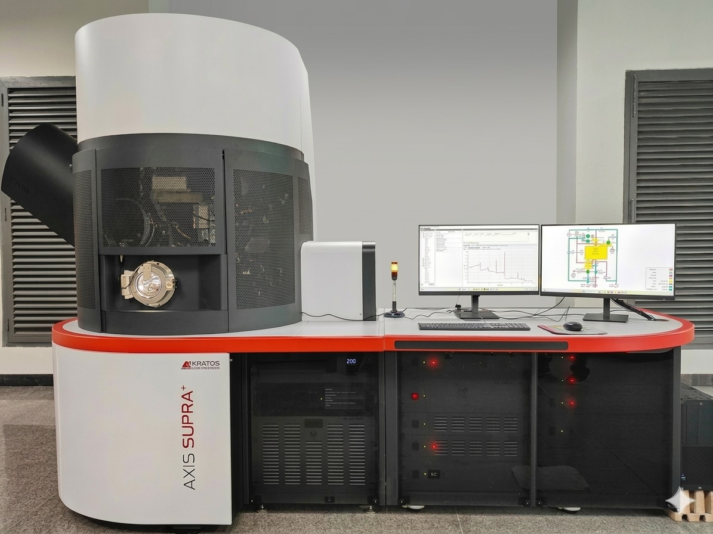

X-ray photoelectron spectroscopy utilizes the photoelectric effect to study materials. In this technique, a sample's surface is bombarded with a beam of high-energy X-rays, and the kinetic energy of the emitted photoelectrons is measured. In this process, an incident photon transfers its entire energy to a bound electron, enabling element identification through the measurement of the energy of electrons that escape from the sample without losing energy. Typical photon sources used in laboratory systems include Mg Kα (1253.3 eV) and Al Kα (1486.6 eV). This technique is surface-sensitive, as the escape depth of emitted photoelectrons is typically between 1 and 3 nm. In materials, the surface is the primary interface that interacts with other materials and the surrounding environment, making surface studies crucial. X-ray photoelectron spectroscopy (XPS) can detect nearly all elements, excluding hydrogen and helium. This technique is applicable to a wide variety of materials, including metals, semiconductors, plastics, and textiles. The photoelectron spectrum is obtained by measuring the emitted electrons across a range of kinetic energies. This technique allows for the determination of surface composition as well as the identification of the valence states of the elements present in the sample. Ultraviolet photoelectron spectroscopy (UPS) employs photons with lower energy (10–50 eV) to excite photoelectrons from the sample surface, providing enhanced sensitivity and energy resolution for analysing the valence band.
Lab # G01, New Building
IIT Delhi Sonipat Campus Rajiv Gandhi Education
City, Rai, Sonipat - 131029, Haryana
Prof. Pankaj Srivastava
Department of Physics
IIT Delhi, Hauz Khas, New Delhi – 110016
Phone: 011-26596558
Email Id: pankajs@physics.iitd.ac.in
Dr. Atul Kumar Singh
Project Consultant
Email: axissupraxps@gmail.com
Phone No. 011-2655-3127